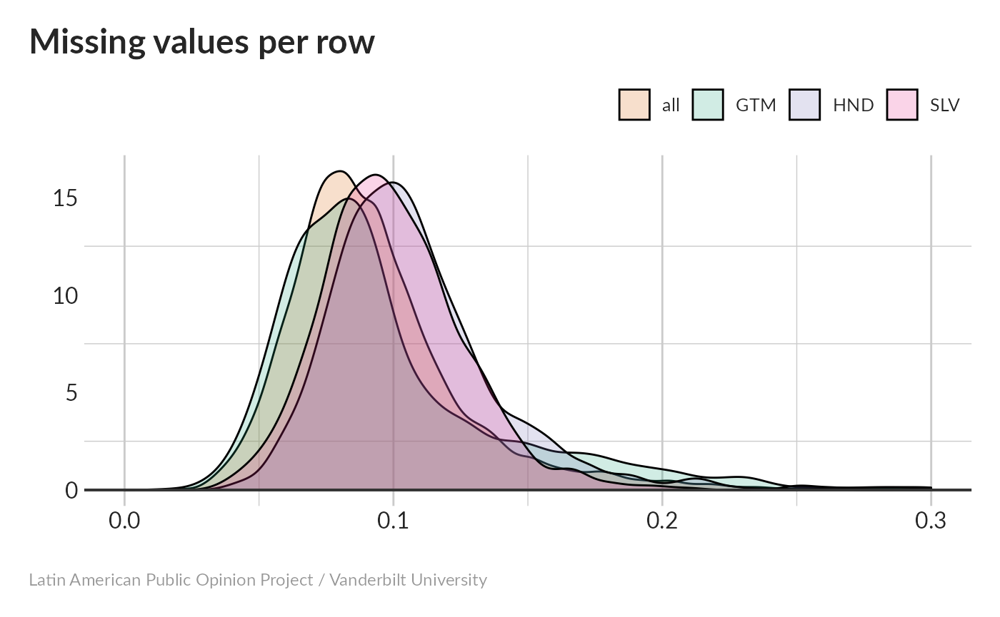

vignettes/Survey_wave_content.Rmd
Survey_wave_content.Rmd#> [1] 0.0978253#> [1] 0.1002434#> [1] 0.1083318#> [1] 0.09347474
#> ctrycollect vb101 exc14 vic2 vic1exta vic2aa
#> 1.0000000 0.9825289 0.9556672 0.8228871 0.8222319 0.8215768
#> exc11 vb4new vb11 vicbar1f
#> 0.7754968 0.7468880 0.7012448 0.6250273The most common missing responses are for:
vb101: Reason for nullifying ballot (98.3%)exc14: Paid a bribe at the courts (95.6%)vic2: Type of victimization (82.3%)vic2aa: Location of victimization (82.2%)exc11: Bribe required to process document in municipal government (77.5%)vb4new: Reason for not voting (74.7%)In general, questions with many missing answers were requesting information about fairly unusual experiences. In all cases, 50% of questions have missing-answer rates of less than 1-2%.